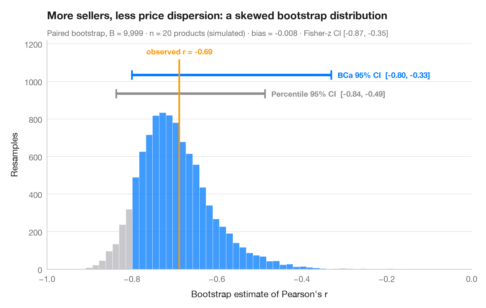

Bootstrap distribution
Resampled correlation with percentile and BCa 95% confidence intervals.

The bootstrap re-estimates a statistic on thousands of samples drawn with replacement from the data; the spread of those estimates is its sampling uncertainty. The histogram is the bootstrap distribution of a correlation, the orange line the value observed in the full sample. Two 95% intervals are drawn above it: the simple percentile interval and the BCa (bias-corrected and accelerated) interval, which shifts to account for the bias and skew visible here — the distribution is far from symmetric.
Data are the 50 US states + DC from the statsmodels statecrime dataset:
the share of single-parent households vs the violent-crime rate.
scipy.stats.bootstrap (paired, 9,999 resamples) provides both intervals.
import matplotlib.pyplot as plt
import numpy as np
import statsmodels.api as sm
from scipy import stats
# Data: violent crime vs single-parent households, 51 states
df = sm.datasets.statecrime.load_pandas().data
x, y = df["single"].to_numpy(), df["violent"].to_numpy()
r_obs = stats.pearsonr(x, y)[0]
# Paired bootstrap of Pearson's r: percentile and BCa intervals from the same resamples
r = lambda a, b, axis=-1: stats.pearsonr(a, b, axis=axis)[0]
boot = {m: stats.bootstrap((x, y), r, paired=True, vectorized=True, n_resamples=9999,
method=m, random_state=np.random.default_rng(7))
for m in ["percentile", "BCa"]}
dist = boot["BCa"].bootstrap_distribution
fisher = np.tanh(np.arctanh(r_obs) + np.array([-1, 1]) * 1.96 / np.sqrt(len(x) - 3))
fig, ax = plt.subplots(figsize=(8, 5))
lo, hi = boot["BCa"].confidence_interval
counts, edges, bars = ax.hist(dist, bins=60, color="#C7C7CC", edgecolor="white", lw=0.4)
for b, left in zip(bars, edges[:-1]):
if lo <= left + (edges[1] - edges[0]) / 2 <= hi:
b.set_facecolor("#007AFF"); b.set_alpha(0.75)
# Intervals stacked above the histogram
top = counts.max()
for i, (m, c, name) in enumerate([("percentile", "#8E8E93", "Percentile"),
("BCa", "#007AFF", "BCa")]):
a, b = boot[m].confidence_interval
yy = top * (1.12 + 0.12 * i)
ax.plot([a, b], [yy, yy], color=c, lw=3, solid_capstyle="butt")
ax.vlines([a, b], yy - top * 0.03, yy + top * 0.03, color=c, lw=2)
ax.text(a - 0.01, yy, f"{name} 95% CI [{a:.2f}, {b:.2f}]", ha="right", va="center",
fontsize=9.5, color=c, fontweight="semibold")
ax.vlines(r_obs, 0, top * 1.34, color="#FF9500", lw=2, zorder=3)
ax.text(r_obs, top * 1.36, f"observed r = {r_obs:.2f}", ha="center", va="bottom",
fontsize=9.5, color="#FF9500", fontweight="semibold")
ax.set_xlim(0.15, 1)
ax.set_ylim(0, top * 1.46)
ax.set_xlabel("Bootstrap estimate of Pearson's r")
ax.set_ylabel("Resamples")
ax.set_title("Crime and single parenthood: a strong but skewed correlation", pad=26)
ax.text(0, 1.02, f"Paired bootstrap, B = 9,999 · n = {len(x)} states · bias = "
f"{dist.mean() - r_obs:+.3f} · Fisher-z 95% CI [{fisher[0]:.2f}, {fisher[1]:.2f}] for comparison",
transform=ax.transAxes, fontsize=9.5, color="#6E6E73")
plt.show()
Figures use the optional PyStatlas style: add plt.style.use("statlas.mplstyle") to match the look exactly.
How to cite
PyStatlas is created and maintained by Thierry Warin. If it helped your work, please cite it.
Warin, T. (2026). Bootstrap distribution. In PyStatlas: The Python Gallery of Statistical Graphics. https://warint.github.io/pystatlas/inference-uncertainty/bootstrap-distribution/
@misc{warin2026statlas,
author = {Warin, Thierry},
title = {PyStatlas: The Python Gallery of Statistical Graphics},
year = {2026},
howpublished = {\url{https://warint.github.io/pystatlas/}},
note = {Source code: https://github.com/warint/pystatlas}
}More in Inference & uncertainty

What a 95% confidence interval means
100 simulated 95% CIs for a mean; the ones that miss the true value are in red.
teaching classic (e.g. TeachingDemos::ci.examp())
Power curve
Power of a two-sample t-test against sample size for small, medium and large effects.
pwr::pwr.t.test() + plot()
Bland–Altman plot
Agreement between two measurement methods, with bias and 95% limits of agreement.
BlandAltmanLeh::bland.altman.plot() / blandr::blandr.draw()